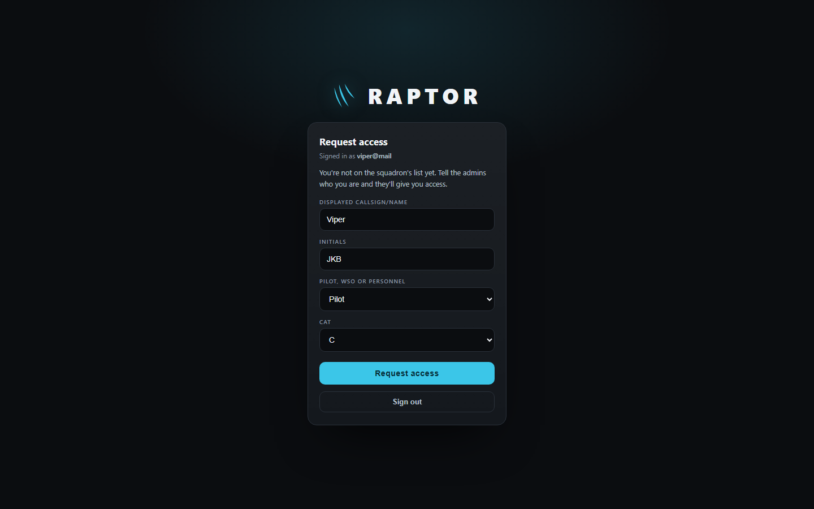
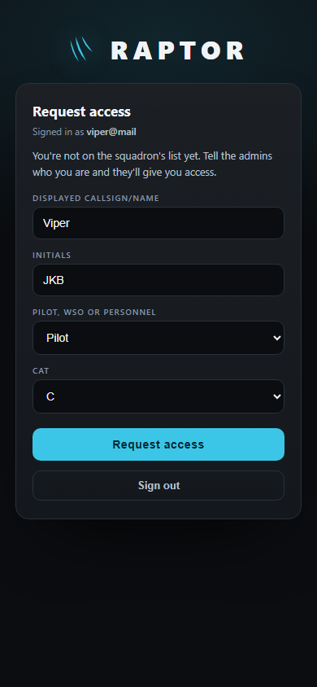
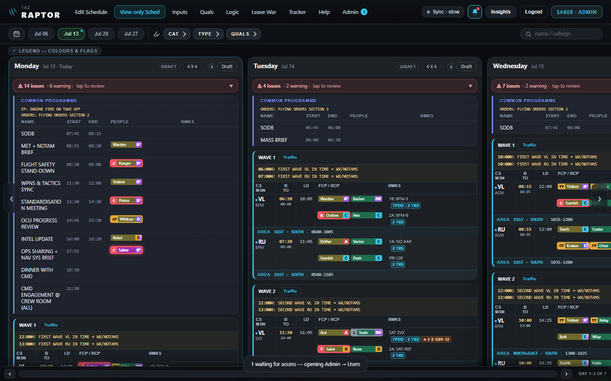
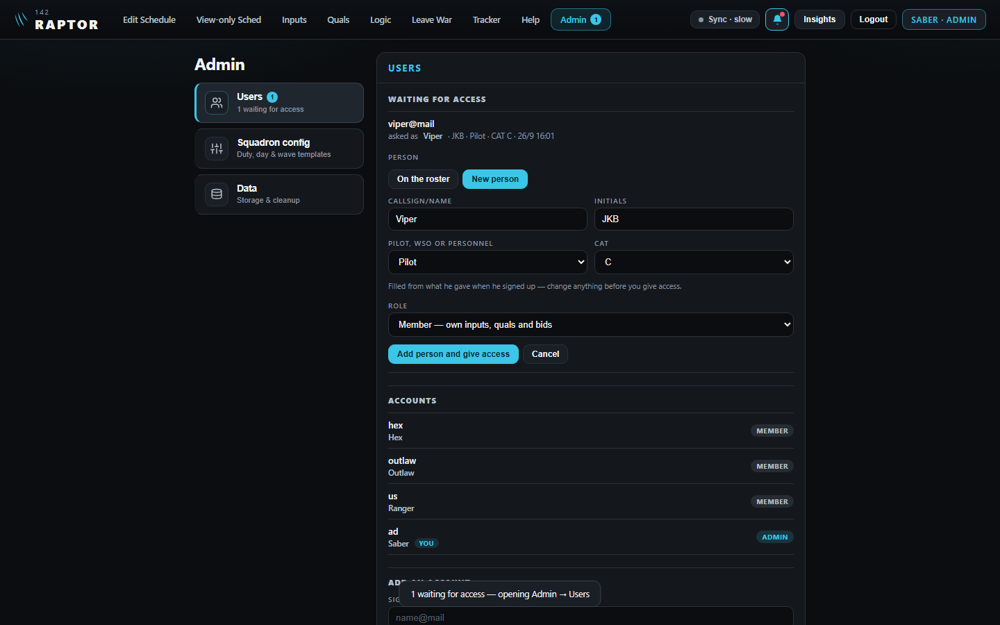
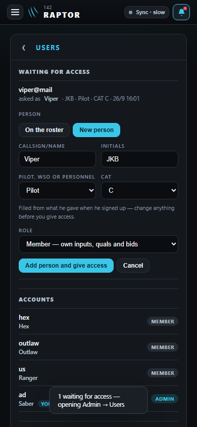
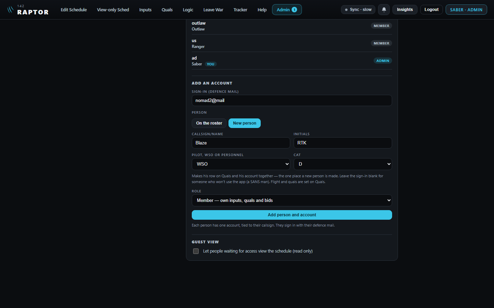
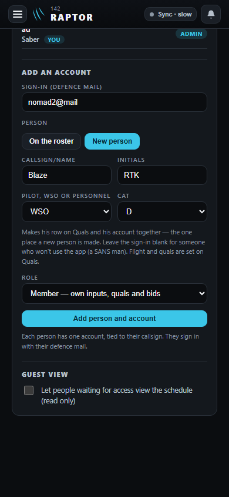

A new person: one door, Admin → Users
The mock-up for D214, D216, D217, D219 and D220 (26 Sep 26) — pictures of the real app with the proposed fields drawn in. Approved 26 Sep 26 (D224) — the design of record for the build.
1 · He signs up
Signing in with a defence mail that isn't on the list asks what the admin's form asks: callsign/name, initials, pilot / WSO / personnel, CAT.


2 · The admins' bell lights; the admin approves — "New person", filled from what he gave
A new request lights the admins' bell (D216); a tap says so and goes to Admin → Users.



3 · The admin adds someone himself
The one place a new callsign is made (D217). A blank sign-in makes someone who won't use the app (a SANS man). Quals' "+ Add person" becomes a button to here.

